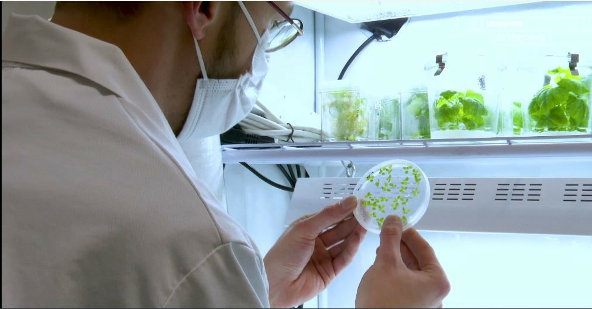

Création de votre plante.
 Pour créer des plantes bioluminescentes, on insère des gènes spécifiques dans les plantes,
qui leur permettent de produire naturellement de la lumière.
Ce procédé transforme les plantes en sources de lumière vivantes et autonomes.
Cela ouvre des perspectives innovantes pour l'éclairage durable.
Pour créer des plantes bioluminescentes, on insère des gènes spécifiques dans les plantes,
qui leur permettent de produire naturellement de la lumière.
Ce procédé transforme les plantes en sources de lumière vivantes et autonomes.
Cela ouvre des perspectives innovantes pour l'éclairage durable.
Durant votre atelier de création, vous aurez la possiblité d'introduire ces gènes dans des plantes,
puis vous verrez d'autres plantes, plus vieilles, certaines adultes et d'autres encore en pleine
croissance. A la fin de cette atelier vous pourrez si vous le souhaitiez emmener une des plantes que vous
avez vu précédemment.
